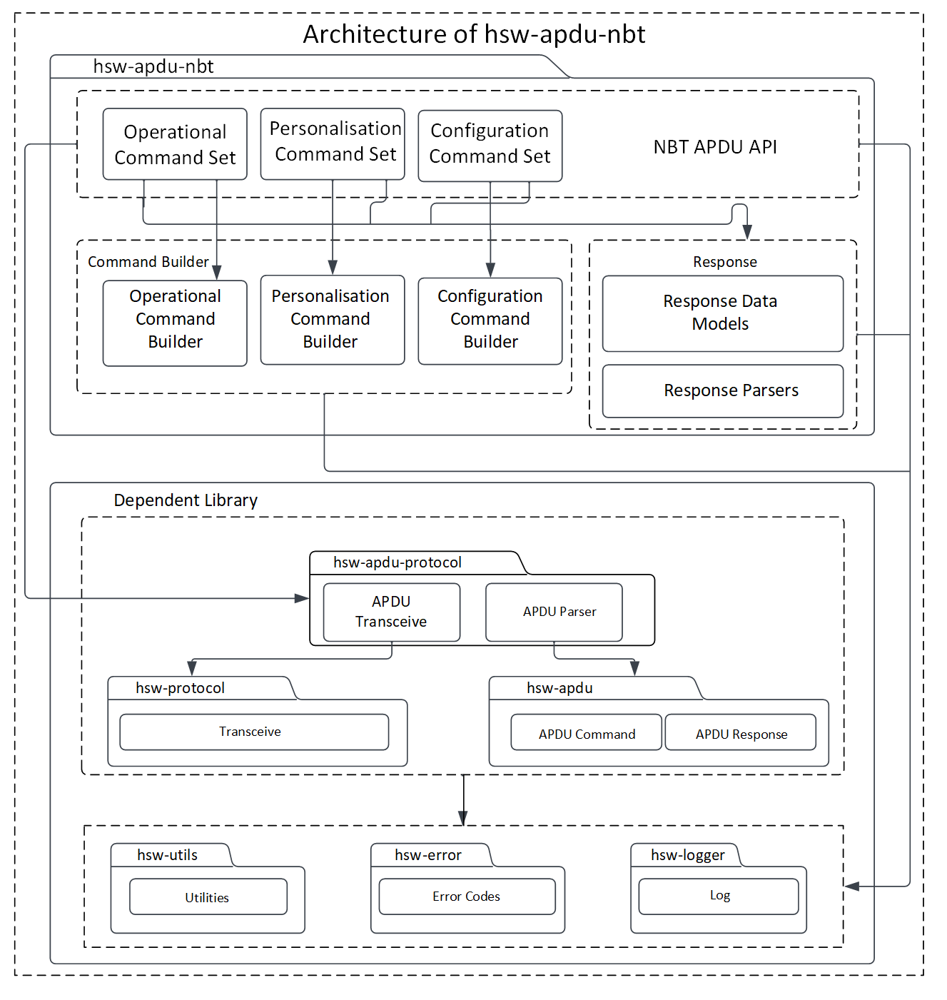
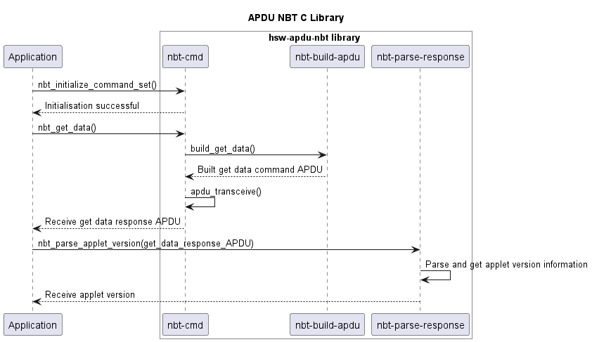

C library to communicate with the OPTIGA™ Authenticate NBT
The OPTIGA™ Authenticate NBT is a dynamic and secure turn-key solution for embedded NFC tag applications with varying levels of security and communication. The OPTIGA™ Authenticate NBT communicates with the smart phones and NFC readers via NFC and with the host MCU via I2C.
The OPTIGA™ Authenticate NBT APDU library allows the host application to send C-APDUs and receive R-APDUs from the OPTIGA™ Authenticate NBT controller. This library can be used with any communication channel, such as NFC and I2C.
Features
- Supports personalization and operational commands of the OPTIGA™ Authenticate NBT's Type-4-Tag applet
- Configuration via the OPTIGA™ Authenticate NBT configurator applet
- Extensible for any communication channel, such as NFC and I2C
- Supports pass-through APDUs
Usage
Include the following headers
Infineon specific error code creation and parsing.
Generic protocol API (ISO/OSI stack).
Global Platform T=1' protocol.
Provides utility functions and macros.
NBT protocol API for exchanging APDUs with NBT product.
Collection of the NBT operational commands.
Initialize the command set
a. Initialize the logger handle
ifx_logger_t logger_handle;
uint32_t ifx_status_t
Custom return code type used by all Infineon host software libraries.
@ IFX_LOG_INFO
Information that help trace the program's normal execution flow.
b. Initialize the protocol
``‘c // Protocol to handle the GP T=1’ I2C protocol communication with tag ifx_protocol_t t1prime_protocol;
// Protocol to handle the MCU I2C drivers functionalities. ifx_protocol_t mcu_i2c_driver;
// Initialize the ifx_protocol_t object with the concrete implementation of the MCU I2C driver. // I2C protocol does not work without this initialization. Refer hsw-nbt/docs/userguide.md for platform-specific implementations.
// Code placeholder
// Use GP prime protocol channel as an interface to communicate with card. // Add I2C and Timer concrete implementation.
status = ifx_t1prime_initialize(&t1prime_protocol, &mcu_i2c_driver);
status = ifx_protocol_activate(&t1prime_protocol, NULL, NULL); ```
A sample API for implementation of MCU I2C driver initialization as per ifx_protocol_t struct is given below:
c ifx_protocol_t mcu_i2c_driver; // Interface realization of PSoC6 I2C driver. status = ifx_i2c_psoc6_initialize(&mcu_i2c_driver, &logger_handle);
c. Initialize the OPTIGA™ Authenticate NBT command set with the required protocol handle and logger handle
c // NBT command set object to handle all OPTIGA™ Authenticate NBT operations. nbt_cmd_t command_set; // Initialize the OPTIGA™ Authenticate NBT command set with GP T=1' protocol status = nbt_initialize(&command_set, &t1prime_protocol, &logger_handle);
Communicate with the OPTIGA™ Authenticate NBT controller
An example to update and read the NDEF message is illustrated below:
{
}
uint16_t file_id = 0xE104;
uint8_t ndef_message[] = {0xD1, 0x01, 0x0D, 0x55, 0x02, 0x69,
0x6E, 0x66, 0x69, 0x6E, 0x65, 0x6F,
0x6E, 0x2E, 0x63, 0x6F, 0x6D};
blob.
length =
sizeof(ndef_message);
uint8_t offset = 0x00;
uint32_t length = sizeof(ndef_message);
#define IFX_CHECK_SW_OK(response_sw)
Check APDU response status word(SW) is success(0x9000)
bool ifx_error_check(ifx_status_t status_code)
Checks if status code indicates error.
uint8_t * nbt_error_message_get(const nbt_cmd_t *self)
Returns the error message for last command executed by NBT command set.
ifx_status_t nbt_read_binary(nbt_cmd_t *self, uint16_t offset, uint8_t binary_data_length)
Reads the binary data from the currently selected elementary file.
ifx_status_t nbt_ndef_update_with_id(nbt_cmd_t *self, uint16_t file_id, ifx_blob_t *ndef_bytes)
Updates the NDEF file with FileID. Method performs the select file with file_id and then update binar...
ifx_status_t nbt_select_application(nbt_cmd_t *self)
Selects the NBT application.
ifx_status_t nbt_select_file(nbt_cmd_t *self, uint16_t file_id)
Selects the elementary file (EF) with the FileID.
ifx_status_t nbt_ndef_read_with_id(nbt_cmd_t *self, uint16_t file_id)
Reads NDEF file and return the NDEF message byte data. Method performs the select file and then read ...
Data storage for data and data length where both are required as parameters.
Architecture
This image shows the software architecture of the library.

Components
- Command set This component acts as the API interface for the host application. This module is responsible for coordinating the building of APDU commands, sending the commands to the secure element through the communication interface, and receiving response from the secure element.
- Command builder This component helps in framing the command APDUs according to the OPTIGA™ Authenticate NBT applet specification.
- Response parser This component helps in decoding the response APDUs including response data and status word according to the OPTIGA™ Authenticate NBT applet specification.
Interaction
Below diagram describes the interaction between the components.

Directory structure
The library directory is structured according to the Pitchfork Layout.
hsw-apdu-nbt
|-- .cmake/ # Includes sources for dependency management
|-- LICENSES/ # Includes list of licenses used for the library
|-- data/ # Includes Doxygen, cppcheck configuration files
|-- docs/ # Includes documentation, source files, images, and the generated API reference
|-- include/ # Public Headers(.h) of the library
|-- src/ # Sources(.c) and Private headers(.h) of the library
|-- .clang-format # clang-format configuration file
|-- .gitignore # Library specific gitignore file
|-- CMakeLists.txt # CMake build configurations for the library
`-- README.md # Overview of the hsw-apdu-nbt library
Dependencies
- hsw-error This dependent library is used for creating and parsing error information.
- hsw-protocol This dependent library provides the communication protocol interface for the OPTIGA™ Authenticate NBT APDU library. This protocol provides interfaces such as initialize, transceive, and terminate to communicate with an external application or product. This library can be implemented for any communication type, such as I2C, UART, and NFC.
- hsw-utils This dependent library provides the utility methods such as for byte conversions, string conversions, bit operations, and encoders/decoders for 2-byte TLV data.
- hsw-logger This dependent library is used for logging information/errors. This library can be implemented for loggers like file-logger and console-logger.
- hsw-apdu This dependent library helps in building the APDU command bytes and parses the APDU response bytes according to the ISO/IEC 7816-4 specification.
- hsw-apdu-protocol This dependent library is used for sending and receiving APDU command bytes according to the ISO/IEC 7816-4 specification.
References
- Infineon Technologies AG: OPTIGA™ Authenticate NBT, Extended Datasheet